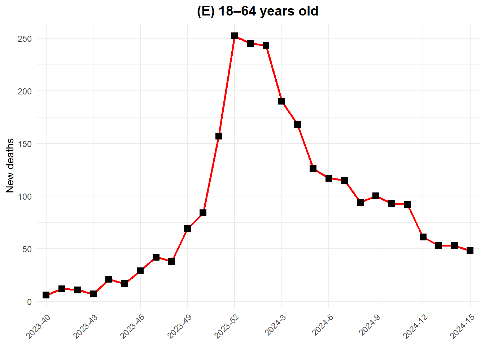

Hoofdstuk 9 Artikel beoordelen op reproduceerbaarheid
9.1 Gekozen artikel
Het artikel dat werd onderzocht voor deze analyse is ‘Infectivity and fatality of influenza in pre- and post-COVID-19 pandemic year’, geschreven door Shuanglin Jing en Hao Wang.
Klik hier om het artikel te zien.
9.1.1 Onderzoeksvraag:
De onderzoeksvraag is van het artikel is: Hoe zijn de epidemiologische kenmerken van influenza veranderd tussen de periode vóór en na de pandemie?
9.1.2 Methode:
Er zijn twee wiskundige modellen gebruikt om de transmissie- en sterftecijfers van influenza in te schatten. Het eerste model is een leeftijdsgestructureerd model waarbij de populatie in meerdere leeftijdsgroepen worden verdeeld, Elke groep wordt vervolgens onderverdeeld in de subklassen vatbaar, latent, geïnfecteerd, hersteld en overleden. Het tweede model is een multistammenmodel dat de transmissie- en sterftecijfers van meerdere influenzastammen binnen de gehele populatie beschouwt. Beide modellen bevatten tijdsafhankelijke parameters om de variabiliteit in influenzatransmissie en -ernst weer te geven.
9.1.3 Resultaten:
-De transmissiesnelheid van influenza onder de bevolking van 18 jaar en ouder was in het laatste jaar van de COVID-19-pandemie (2022-2023) relatief laag.
-In het eerste jaar na de pandemie (2023-2024) was de transmissiesnelheid in deze leeftijdsgroep weer gestegen tot het niveau van vóór de pandemie.
-Bij personen onder de 18 jaar bleef de transmissiesnelheid stabiel.
-Bij influenza a waren deze verschillen groter dan bij influenza b.
-In 2022-2023 vertoonden de grieptesterftecijfers verhoogde niveaus bij alle 3 de leeftijdscategorieën (0-17 jaar, 18-64 jaar en 65-plussers). In 2023-2024 daalden de sterftecijfers door influenza in alle drie de leeftijdsgroepen terug naar het niveau van vóór de pandemie.
9.2 Beoordelingscriteria voor reproduceerbaarheid
| Transparency.Criteria | Response |
|---|---|
| Study Purpose | Yes |
| Data Availability Statement | Yes |
| Data Location | Yes |
| Study Location | Yes |
| Author Review | Yes |
| Funding Statement | Yes |
| Code Availability | Yes |
9.3 Reproduceerbaarheid van de gedeelde R code
-Er is een bestand genaamd README toegevoegd aan de repository, maar deze is niet ingevuld. Dit maakt het lastig om te bepalen welke bestanden nodig zijn.
-Het artikel staat in de website onder artikelen die R code bevatten, maar in werkelijkheid is er gebruik gemaakt van analyse in MATLAB, wat te zien is aan het gebruik van .m en .mat bestanden. Dit maakt volledige analyse in Rstudio niet mogelijk.
-Er zijn wel .csv en .xlsx bestanden beschikbaar. Deze zijn al in tidy format gezet.
Ik heb geprobeerd om figuur 1E van het artikel zoveel mogelijk te reproduceren in Rstudio. Hiervoor heb ik het bestand Death data(18-64).xlsx gebruikt. Dit bestand is hier te vinden.
9.3.1 Importeer de dataset Death data(18-64).xlsx
# Laad de libraries tidyverse en readxl
library(tidyverse)
library(readxl)
# Importeer het bestand Death data(18-64).xlsx in Rstudio
death_data_18_64 <-read_excel("~/dsfb2/dsfb2_workflows_portfolio/dsfb2_workflows_portfolio/projecten/4b_artikel_beoordelen_op_reproduceerbaarheid/Death data(18-64).xlsx")9.3.2 Selecteren en filteren van data
Selecteer de volgende data:
-SEASON: 2023-24
-WEEK: 40 t/m 52 en 1 t/m 15
-NUM INFLUENZA DEATHS die bij deze rijen horen
library(dplyr)
# Definieer correcte weekvolgorde
week_order <- c(40:52, 1:15)
# Selecteer en filter de volgende data:
## SEASON: 2023-24
## WEEK: 40 t/m 52 en 1 t/m 15
## NUM INFLUENZA DEATHS die bij deze rijen horen
fig1e_data <- death_data_18_64 %>%
filter(
SEASON == "2023-24",
WEEK %in% week_order
) %>%
mutate(
WEEK = factor(WEEK, levels = week_order)
) %>%
arrange(WEEK) %>%
select(
SEASON,
WEEK,
`NUM INFLUENZA DEATHS`
)
# Controleer of de juiste data is geselecteerd
fig1e_data## # A tibble: 28 × 3
## SEASON WEEK `NUM INFLUENZA DEATHS`
## <chr> <fct> <dbl>
## 1 2023-24 40 6
## 2 2023-24 41 12
## 3 2023-24 42 11
## 4 2023-24 43 7
## 5 2023-24 44 21
## 6 2023-24 45 17
## 7 2023-24 46 29
## 8 2023-24 47 42
## 9 2023-24 48 38
## 10 2023-24 49 69
## # ℹ 18 more rowslibrary(ggplot2)
library(dplyr)
# Labels die op de x-as worden getoond (elke 3 weken)
label_weeks <- c(40, 43, 46, 49, 52, 3, 6, 9, 12, 15)
# Pas namen op de x-as aan zodat ze genoteerd staan als jaar-week
fig1e_plot_data <- fig1e_data %>%
mutate(
WEEK = factor(WEEK, levels = week_order),
YEAR_WEEK = case_when(
as.numeric(as.character(WEEK)) >= 40 ~ paste0("2023-", WEEK),
as.numeric(as.character(WEEK)) <= 15 ~ paste0("2024-", WEEK)
)
)
ggplot(
fig1e_plot_data,
aes(
x = WEEK,
y = `NUM INFLUENZA DEATHS`,
group = 1
)
) +
geom_line(color = "red", linewidth = 1) +
geom_point(shape = 15, size = 3, color = "black") +
scale_x_discrete(
breaks = as.character(label_weeks),
labels = case_when(
label_weeks >= 40 ~ paste0("2023-", label_weeks),
label_weeks <= 15 ~ paste0("2024-", label_weeks)
)
) +
scale_y_continuous(
name = "New deaths",
breaks = seq(
0,
max(fig1e_plot_data$`NUM INFLUENZA DEATHS`, na.rm = TRUE),
by = 50
)
) +
labs(
x = NULL,
title = "(E) 18–64 years old"
) +
theme_minimal() +
theme(
plot.title = element_text(hjust = 0.5, face = "bold", size = 14),
axis.text.x = element_text(angle = 45, hjust = 1)
)
Figure 9.1: Aantal mensen van 18-64 jaar die tussen week 40 van 2023 en week 15 waren overleden aan influenza in de Verenigde Staten.
Binnen Rstudio was het mogelijk om het aantal personen (18-64 jaar) dat per week was overleden aan influenza in seizoen 2023-2024 te visualiseren. De labels op de x-as en y-as komen ook overeen met het oorspronkelijke figuur. Een belangrijk verschil is dat de lijn nu is getrokken door het aantal overleden personen per week, terwijl in de oorspronkelijke figuur de lijn werd gebruik voor het geschatte aantal overleden personen. Dit komt omdat deze data niet kon worden teruggevonden, mogelijk is deze data opgesteld aan de hand van een functie die niet in Rstudio beschikbaar is. Het aantal overleden personen per week komt overeen met wat in figuur 1E van het artikel afgebeeld stond.
In de gemaakte figuur missen de volgende onderdelen:
-Cubic spline fitting
-95% CI-band
-MATLAB age-structured model
9.3.3 Samenvatting
Het artikel zelf voldoet aan de eisen voor reproduceerbaarheid. Het artikel verschijnt echter ten onrechte tussen de resultaten wanneer er gefilterd wordt op R code bij Data Availability. Het artikel hoort onder MATLAB gefilterd te worden. De reproduceerbaarheid binnen Rstudio is niet goed omdat Rstudio niet de benodigde functies heeft om de figuur volledig te reproduceren. De data die is gegeven lijkt wel overeen te komen met de figuren in het artikel en aan de hand van de figuur beschrijving van figuur 1 was het mogelijk om de figuur deels te reproduceren.
Voor reproduceerbaarheid binnen Rstudio krijgt dit onderzoek daarom het cijfer 2. Als er voor deze analyse de mogelijkheid bestond om met MATLAB te werken, zou deze score waarschijnlijk hoger zijn.